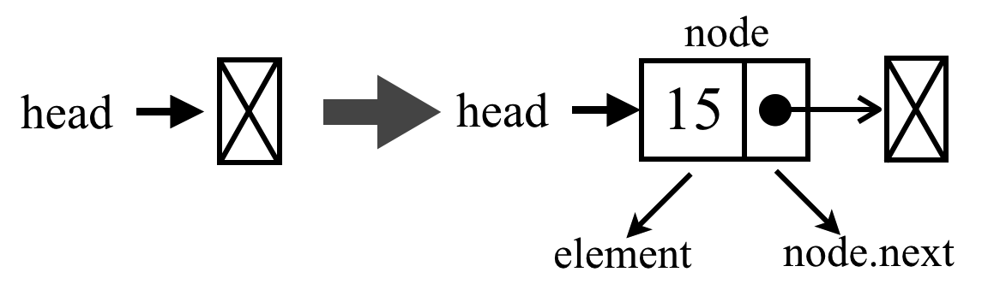

链表(LinkedList)
李艳生
湖北师范大学
物理与电子科学学院
2020年春季
回顾
- 回顾第三四周学习的栈和队列
- 回顾第二周学习的数组
- 数组的优点？
- 数组的缺点？
- 数组的内存存储结构？
引入
请大家思考我们要存储一组有序数据，可以用什么数据结构？
内容
链表(重点)
双向链表(重点)
循环链表
任务
链表
图1 火车
图2 链表
链表
- 链表存储一组有序数据
- 链表中每个数据都带一个指针或链接，指向下一个数据
- 链表在内存中可以不连续
- 改变链接指向，高效增删数据
链表操作
- 创建链表
- 查找
- 添加
- 删除
- 判空
- 长度
- 转字符串
算法演示
创建链表
- 链表包含一个头节点和一系列节点，头节点链接指向第一个节点，节点与节点链接在一起。
- 分别用类封装头节点和节点。
创建链表节点
- 链表节点包含元素本身和链接，链接指向下一个节点
//节点定义
class Node{
constructor(element){
this.element = element;
this.next = undefined;
}
}
创建头节点
- 头节点包含链表长度、头链接和自定义相等函数属性
- 头节点包含查找、添加、删除节点方法
创建头节点
//自定义判断相等的函数
function defaultEquals(a, b) {
return a === b;
}
//头节点定义
class LinkedList{
constructor(equalsFn = defaultEquals){
this.count = 0; //记录链表长度
this.head = undefined; //链表头指针或链接
this.equalsFn = equalsFn; //判断元素相等
}
getElementAt(index){} //返回链表中特定位置的元素
indexOf(element){} //返回元素在链表中的索引
push(element){} // 向链表部添加一个新元素
insert(element, index){} //向链表的特定位置插入一个新元素
remove(element){} //从链表中移除一个元素
removeAt(index){} //从链表的特定位置移除一个元素
isEmpty(){} // 链表无元素返回true,否则返回false
size(){} //返回链表包含的元素个数,即链表长度
toString(){}//转字符串
}
查找元素
- 给定索引，返回链表中特定位置的元素
- 没有找到元素返回undefined
getElementAt(index) {
if (index >= 0 && index <= this.count) {//越界检查
let node = this.head;
for (let i = 0; i < index && node != null; i++) {
node = node.next;
}
return node;
}
return undefined;
}
查找索引
- 给定元素，返回一个元素的索引
- 如果在链表中找到了它，就返回元素的索引，否则返回-1。
indexOf(element) {
let current = this.head; //第一个元素
for (let i = 0; i < this.count && current != null; i++) {
if (this.equalsFn(element, current.element)) { // 判断相等
return i;// 找到返回元素索引
}
current = current.next; // 下一个元素
}
return -1; // 没有找到返回-1
}
尾部添加元素
- 向链表尾部添加一个新元素
- 两种情况：链表为空添加第一个元素；链表不为空向其追加元素
尾部添加元素

图3 链表为空
图3 链表为空
尾部添加元素
图4 链表非空
尾部添加元素
push(element) {
const node = new Node(element);
let current;
if (this.head == null) {//链表为空
this.head = node;
} else { //链表非空
current = this.head;
while (current.next != null) {
current = current.next;
}
// 将其next 赋为新元素，建立链接
current.next = node;
}
this.count++;
}
任意添加元素
- 给定元素和索引，在任意位置插入一个元素
- 三种情况：第一个位置，尾部，中间位置分别添加元素
任意添加元素
图5 添加第一个位置元素
任意添加元素
图6 添加尾部元素
任意添加元素
图7 添加中间元素
任意添加元素
insert(element, index) {
if (index >= 0 && index <= this.count){ //越界检查
const node = new Node(element);
if (index === 0) { // 在第一个位置添加
const current = this.head;
node.next = current;
this.head = node;
} else { // 中间，尾部添加元素
const previous = this.getElementAt(index - 1);
const current = previous.next;
node.next = current;
previous.next = node;
}
this.count++; // 更新链表的长度
return true;
}
return false;
}
删除元素
- 给定索引，从特定位置移除一个元素
- 两种情况：第一种是移除第一个元素，第二种是移除第一个元素之外的其他元素。
删除元素
图8 删除第一个元素
删除元素

图9 删除尾部元素
删除元素
图10 删除中间元素
删除元素
removeAt(index) {
// 检查越界值
if (index >= 0 && index < this.count) { //越界检查
let current = this.head;
// 移除第一项
if (index === 0) {
this.head = current.next;
} else {//移除中间，尾部元素
const previous = this.getElementAt(index - 1);
current = previous.next;
previous.next = current.next;
}
this.count--; // 更新长度
return current.element;
}
return undefined;
}
删除元素
- 给定元素，从链表中移除一个元素
- indexOf方法，如果传入元素的值，就可以找到它的位置。调用removeAt 方法并传入该位置。
remove(element) {
const index = this.indexOf(element);
return this.removeAt(index);
}
获取长度
- 链表中元素个数
size() {
return this.count;
}
判空
- 如果列表中没有元素，isEmpty 方法就返回true，否则返回false。
isEmpty() {
return this.size() === 0;
}
转字符串
toString(){
let ret = '';
if(this.head == null){
return ret;
}
ret = `${this.head.element}`
let current = this.head.next;
for(let i = 1; i < this.size() && current != null; i++){
ret = `${ret}->${current.element}`;
current = current.next;
}
return ret;
}
链表使用
- 用new创建LinkedList对象
//创建链表
let list = new LinkedList();
//尾部添加
list.push(1);
list.push(2);
list.insert(3,list.size());
//头部添加
list.insert(4,0);
//任意位置添加
list.insert(5,2);
//删除元素
list.remove(2);
//删除第一个元素
list.removeAt(0);
链表应用
- 用链表创建一个栈
- 比较用链表头节点或尾节点做栈顶的差别
链表应用
//链表第一个位置做栈顶
class Stack{
constructor(){
this.items = new LinkedList();
}
push(element){
this.items.insert(element, 0);
}
pop(){
return this.items.removeAt(0);
}
peek(){
return this.items.head.element;
}
isEmpty(){
return this.items.size() === 0;
}
clear(){
this.items = new LinkedList();
}
}
双向链表
- 双向链表头节点除了有头指针或头链接，还有尾指针或尾链接
- 双向链表节点除了指向下一个元素，还指向前一个元素
双向链表操作
- 创建链表
- 添加
- 删除
- 转字符串
算法演示
创建双向链表
- 双向链表包含头节点和节点，头节点链接指向第一个节点
- 分别用类封装头节点和节点
- 双向链表继承单链表
class DoublyNode extends Node {
constructor(element) {
super(element);
this.prev = undefined; // 新增指向前一个元素链接
}
}
创建双向链表
- 双向链表包含头节点和节点，头节点链接指向第一个节点
- 分别用类封装头节点和节点
- 双向链表继承单链表
- 重写insert,removeAt方法,其它方法继承
class DoublyLinkedList extends LinkedList {
constructor(equalsFn = defaultEquals) {
super(equalsFn);
this.tail = undefined; // 新增的尾链接
}
insert(element, index){} //向链表的特定位置插入一个新元素
removeAt(index){} //从链表的特定位置移除一个元素
toString(){}
}
任意添加元素
- 在任意位置插入一个元素
- 三种情况：添加第一个位置，尾部，中间元素
任意添加元素

图12 添加第一个元素
任意添加元素
图13 添加尾部元素
任意添加元素
图14 添加中间元素
任意添加元素
insert(element, index) {
if (index >= 0 && index <= this.count) {
const node = new DoublyNode(element);
let current = this.head;
if (index === 0) { //添加第一个位置元素
if (this.head == null) {//链表为空
this.head = node;
this.tail = node;
} else {//链表非空
node.next = this.head;
current.prev = node;
this.head = node;
}
} else if (index === this.count) { // 添加最后一项
current = this.tail;
current.next = node;
node.prev = current;
this.tail = node;
} else { //添加中间元素
const previous = this.getElementAt(index - 1);
current = previous.next;
node.next = current;
previous.next = node;
current.prev = node;
node.prev = previous;
}
this.count++;
return true;
}
return false;
}
删除元素
- 从特定位置移除一个元素
- 三种情况：删除第一个位置，尾部，中间元素
删除元素
图15 删除第一个元素
删除元素
图16 删除尾部元素
删除元素
图17 删除中间元素
删除元素
removeAt(index) {
if (index >= 0 && index < this.count) {
let current = this.head;
if (index === 0) {//第一个位置
this.head = current.next;
// 如果只有一项，更新tail
if (this.count === 1) {
this.tail = undefined;
} else {
this.head.prev = undefined;
}
} else if (index === this.count - 1) { // 最后一项
current = this.tail;
this.tail = current.prev;
this.tail.next = undefined;
} else {//中间位置
current = this.getElementAt(index);
const previous = current.prev;
// 将previous 与current 的下一项链接起来——跳过current
previous.next = current.next;
current.next.prev = previous;
}
this.count--;
return current.element;
}
return undefined;
}
双向链表使用
- 用new创建DoublyLinkedList对象
//创建双向链表
let list = new DoublyLinkedList();
//尾部添加
list.insert(3,list.size());
//头部添加
list.insert(4,0);
//任意位置添加
list.insert(5,2);
//删除元素
list.remove(2);
//删除第一个元素
list.removeAt(0);
//删除最后一个元素
list.removeAt(list.size() - 1);
循环链表
- 循环链表只有尾部指针或链接指向第一个节点
双向循环链表
- 双向循环链表尾部节点next链接指向第一个节点
- 双向循环链表第一个节点prev链接指向尾部节点
循环链表操作
- 创建链表
- 添加
- 删除
创建循环链表
- 循环链表继承链表
- 重写insert,removeAt方法
//节点定义
class CircularLinkedList extends LinkedList{
constructor(equalsFn = defaultEquals){
super(equalsFn);
}
insert(element, index){}
removeAt(index){}
}
添加元素
- 在任意位置插入一个元素
- 两种情况：链表为空添加第一个元素，链表非空第一个位置添加元素
添加元素
图20 链表为空添加第一个元素
添加元素
图20 链表非空添加第一个元素
添加元素
insert(element, index) {
if (index >= 0 && index <= this.count) {
const node = new Node(element);
let current = this.head;
if (index === 0) {
if (this.head == null) {
this.head = node;
node.next = this.head;
} else {
node.next = current;
current = this.getElementAt(this.size());
// 更新最后一个元素
this.head = node;
current.next = this.head;
}
} else { // 这种场景没有变化
const previous = this.getElementAt(index - 1);
node.next = previous.next;
previous.next = node;
}
this.count++;
return true;
}
return false;
}
删除元素
- 从特定位置移除一个元素
- 两种情况：移除只有一个元素链表，移除长度大于1的链表第一个元素
删除元素
图20 删除长度大于1的链表第一个元素
删除元素
removeAt(index) {
if (index >= 0 && index < this.count) {
let current = this.head;
if (index === 0) {
if (this.size() === 1) {
this.head = undefined;
} else {
const removed = this.head;
current = this.getElementAt(this.size());
this.head = this.head.next;
current.next = this.head;
current = removed;
}
} else {
// 不需要修改循环链表最后一个元素
const previous = this.getElementAt(index - 1);
current = previous.next;
previous.next = current.next;
}
this.count--;
return current.element; // {6}
}
return undefined;
}